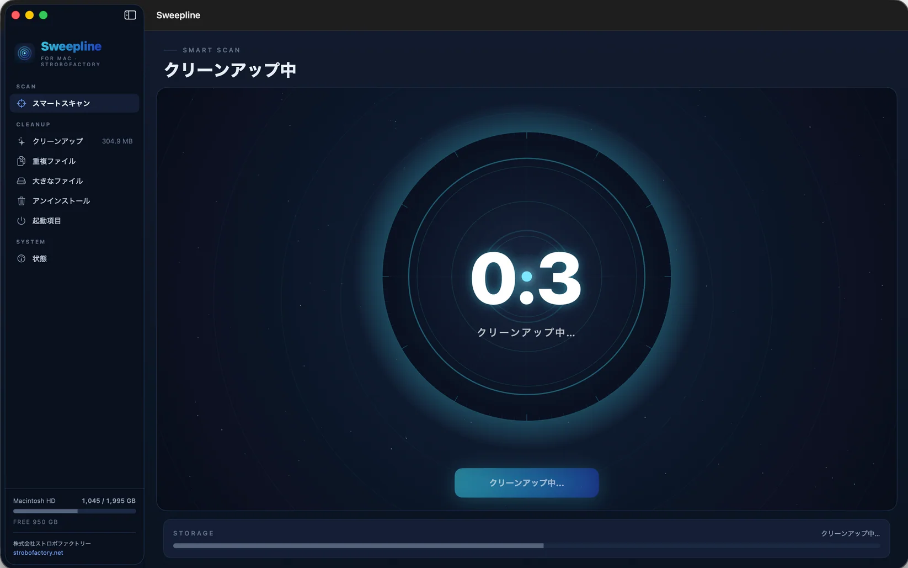
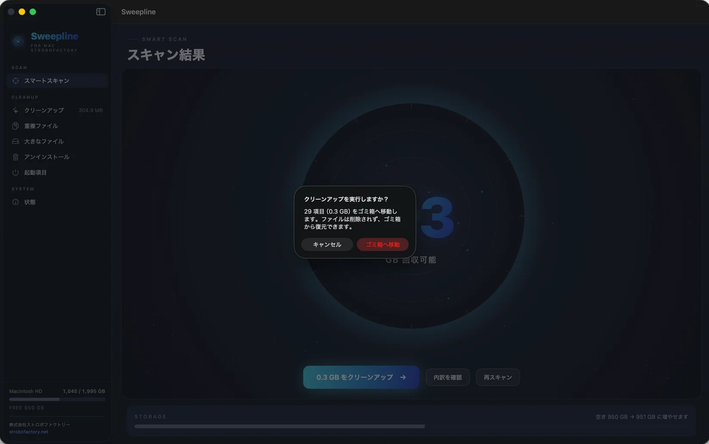

SMART SCAN
まず全体を見る
Macの中をスキャンして整理できる容量を一望
A CLEANER MAC
不要なファイルを見つけ
確認してから整理する
それがSweeplineです

WHY SWEEPLINE
Macの空き容量が減ってくると まず思うのは掃除したいということです
ところがクリーナーを探すと ワンクリックで軽くなる メモリを解放して高速化 という言葉が並びます
でも本当に知りたいのは 何が容量を使っていて どれだけ片付けられるのか それだけではないでしょうか
Sweeplineを作るとき 最初に決めたのは できないことまで大きく見せないことでした
表示する容量は実測値だけ スキャンして0.8GBなら0.8GB 本当に数十GBたまっているときだけ数十GBと表示します
そして掃除の道具でいちばん怖いのは 大事なものまで消してしまうことです だから削除は完全消去ではなくゴミ箱へ移動します 実行前には必ず対象を確認できます
システムやXcodeの管理下にある領域も 最初から検出対象から外しました 注意して使うことを求めるより 危ないものを見せないほうが道具として自然だと考えたからです
実測だけ表示する容量は実際に回収できる数値だけ
消す前に確認削除はゴミ箱へ 間違えても戻せる設計
危ないものは見せないシステム管理下の領域は最初から検出対象外
できることだけを 正確にやります
02 / FEATURES
必要な機能だけを横に追って見られます
SMART SCAN
Macの中をスキャンして整理できる容量を一望
CLEANUP
キャッシュ ログ 一時ファイル 開発ジャンクを確認
DUPLICATES
SHA-256で中身を比較して同じファイルを検出
LARGE FILES
容量を使っているファイルを見つけてFinderで確認
UNINSTALLER
アプリ本体と残った関連ファイルをまとめて整理
STARTUP ITEMS
LaunchAgentsとDaemonsを見て不要な項目を整理
STATUS
CPU メモリ ディスクを読み取り専用で表示

03 / HOW IT WORKS
01 / MEASURE
表示するのは実際に回収できる容量だけです
大きく見せるための数字ではなく 今のMacにあるものをそのまま見せます
02 / CONFIRM
Sweeplineは見つけたファイルを勝手に削除しません
対象を確認して 必要なものだけをゴミ箱へ移動します
03 / PROTECT
/SystemやXcode CoreSimulatorなど システム管理下の領域は検出対象から外しています
注意して使うことを求めるより 間違えにくい道具にするためです
Apple公証済み
05 / FAQ
Sweeplineはファイルを完全消去せずすべてmacOSのゴミ箱へ移動します実行前に削除対象を確認でき/System やXcode CoreSimulatorなど削除すべきでないシステム領域は検出対象から除外しています
いいえSweeplineが行うのは実際にディスクを使用している不要ファイルを見つけ空き容量を回収することです高速化やメモリ最適化をうたう機能は搭載しておらず表示する容量は実測値です
2,980円の買い切りで月額・年額料金はありません1つのライセンスでMac 2台まで利用できますMacを買い替える場合は旧Macの認証を解除して同じライセンスキーを新しいMacで利用できます
macOS 14 Sonoma以降に対応していますApple Silicon（M1以降）とIntel Macの両方に対応しています
購入後ダウンロードリンクとライセンスキーをメールでお送りしますApple Notarization取得済みでDMGからアプリケーションフォルダへ移動してインストールできます新しいバージョンはアプリ内で確認・更新できアップデートは無料です
重複ファイルはファイル名ではなくSHA-256で内容を比較しハードリンクは重複として扱いません初回ライセンス認証にはインターネット接続が必要ですがその後はオフラインでも通常どおり利用できます
Sweepline for Mac
2,980円
2,980円で購入